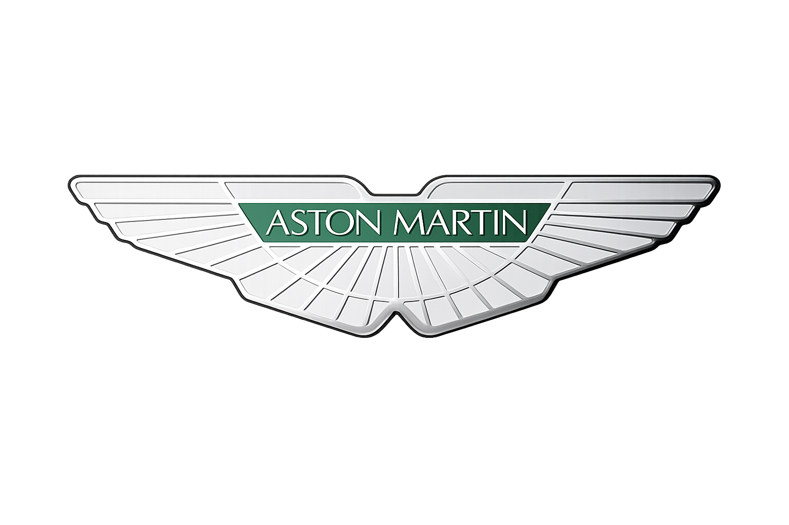

Interiornya adalah perpaduan kulit premium, serat karbon, dan teknologi modern.
Kursi bucket sport menopang tubuh dengan sempurna, sementara dashboard menampilkan
kontrol intuitif yang tetap mempertahankan nuansa mewah. Setiap detail, mulai dari
jahitan kulit hingga tombol aluminium, dibuat dengan presisi tinggi.
Di jalan raya,
Vantage S bukan hanya cepat—0–100 km/jam dalam 3,4 detik—tetapi juga lincah.
Sistem suspensi adaptif dan sasis yang diperkuat membuat mobil ini terasa stabil
bahkan saat menikung tajam pada kecepatan tinggi. Dengan kecepatan puncak mencapai
325 km/jam, ia bersaing langsung dengan supercar dari Jerman dan Italia, namun tetap
mempertahankan aura eksklusif khas Inggris.